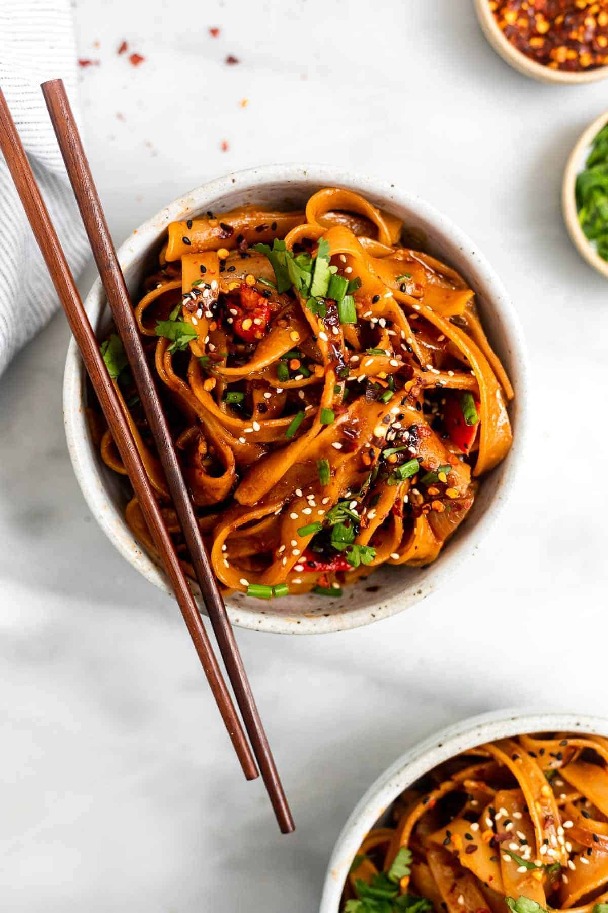

Garlic Noodles

Description
These spicy chili garlic noodles are ready in about 15 minutes and FULL of flavor. They’re gluten free and
vegan but delicious with some extra stir fried veggies and your choice of protein!
Ingredients
- Chili
- Green pepper
- Garlic
- Meat sauce
Steps
- Add the shallot and garlic to a pot and saute with the oil until browned, about 5 minutes. Add
the white part of the scallions and the grated ginger and saute for 2-3 more minutes.
- Add in all remaining sauce ingredients and whisk together. Start on the low end of the recommended amounts of sriracha and chili sauce (1 tbsp or less for each).
- When the noodles are done cooking, combine with the sauce and diced roasted pepper and toss until well coated. taste and adjust flavors as desired.
- Serve as is or with any other vegetables or protein of choice. I love adding in bok choy, carrot or cabbage with chicken or tofu.
- Top with red chili flakes for more spice and the remaining chopped scallions. Enjoy!